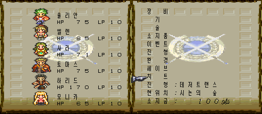
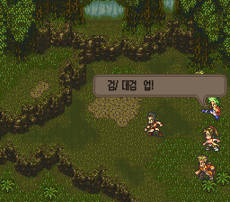
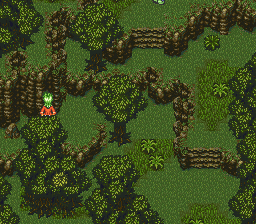
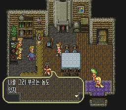

게임 소개
여덟 주인공 가운데 한 명을 골라 자유롭게 세계를 돌아다니는 스퀘어의 RPG 「로맨싱 사가 3」을 일본 팬이 크게 고친 개조판입니다. 로맨싱 사가 1·2, 사가 프론티어 등 다른 시리즈의 이벤트·동료·보스가 추가되고 난이도가 크게 올라갔습니다. 이 패치는 이미 나와 있는 한국어판 위에 치트만 더합니다. 개조판은 원작자의, 한국어 번역은 bokuno-rs3-ko 한국어 패치 제작자의 작업입니다.
- 원작
- 로맨싱 사가 3 (스퀘어, 슈퍼패미컴, 1995)
- 개조판
- ぼくのロマサガ3 Proto1.123
- 장르
- RPG
- 바탕
- 한국어 패치 v0.118 (8MB 롬)
치트 메뉴
필드에서 Select로 여는 게임 메뉴 맨 아래 「치트」를 고르면 치트 메뉴가 열립니다. 치트 메뉴를 닫으면 커서가 「치트」에 놓인 채 게임 메뉴로 돌아옵니다. 필드에서 L+R을 누른 채 Select를 눌러 바로 열 수도 있습니다(이때는 닫으면 필드로 돌아갑니다).
치트 메뉴에서는 ↑↓로 고르고 ←→(또는 A)로 바꾸며, B나 Start로 닫습니다. 메뉴가 열려 있는 동안 게임은 멈춥니다. 「치트」 항목이 들어갈 자리를 만들려고 게임 메뉴 오른쪽 목록을 8픽셀 위로 올렸습니다.
| 오럼 배율 | 1~5배. 전투와 이벤트로 얻는 오럼이 배율만큼 늘어납니다. 소지금 상한(30,000)을 넘는 이벤트 오럼은 원래 게임처럼 은행 쪽으로 넘어갑니다. |
|---|---|
| 성장 배율 | 1~5배. 전투가 끝난 뒤 성장 판정(HP·기술 레벨·술법 레벨·WP·JP)을 배율 횟수만큼 반복합니다. 한 번의 전투에서 여러 번 「업!」이 뜰 수 있습니다. |
| 번뜩임 배율 | 1~5배. 기술 번뜩임(閃き) 확률에 배율을 곱합니다(최대 100%). 개조판의 번뜩임 적성·난이도 규칙상 확률이 0인 기술은 그대로 0입니다. |
| HP·WP·JP 유지 | 켬이면 전투 중 파티의 HP·WP·JP를 계속 최대로 채웁니다. 이미 쓰러진 동료는 되살리지 않고, 최대 HP보다 큰 피해를 한 번에 받으면 쓰러질 수 있습니다. |
| LP 유지 | 켬이면 전투 중 LP를 최대로 유지합니다. 쓰러진 상태에서도 LP가 줄지 않습니다. |
| 이동속도 2배 | 켬이면 걸을 때도 Y 버튼 대시와 같은 속도로 움직입니다. 칸 단위 이동 규칙은 그대로라 벽이나 이벤트 판정이 바뀌지 않습니다. |
| 조우 회피 | 켬이면 필드를 돌아다니는 잡몹 심볼에 닿아도 전투가 시작되지 않고 심볼이 사라집니다. 보스·고정 전투·이벤트로 강제되는 전투는 그대로 일어납니다. |
처음 값은 모두 1배·끔이라 메뉴를 건드리지 않으면 원래 게임과 같습니다. 설정은 게임을 켤 때마다 처음 값으로 돌아갑니다(세이브에 저장되지 않음). 모든 기술·술법·진형 배우기와 동료 강제 추가는 개조판이 늘려 놓은 칸과 이벤트 플래그를 깨뜨릴 위험이 커서 넣지 않았습니다.
화면




적용 방법
한국어판 롬 만들기
일본판 v1.1 롬(헤더 없음, 4,194,304바이트)에 원작 개조판 패치
ぼくのProto1.123.ips를 적용하고(결과 CRC327E165025), 그 위에 한국어 패치bokuno_ko_v0.118.xdelta를 적용합니다. 자세한 순서는 한국어 패치 저장소의 설치 안내를 따르세요.롬 확인
한국어판 롬이 CRC32
709120DF, SHA-1f32e30d007e4e1fd54c7a972004c4d24c2429a64(8,388,608바이트)인지 확인합니다. 값이 다르면 이 패치를 적용하지 마세요.치트 패치 적용
RomPatcher.js(웹)나 Floating IPS(PC)로 적용합니다. 결과 롬 CRC32는
23EE1DE8입니다. 한국어판에서 쓰던 세이브를 그대로 이어서 쓸 수 있습니다.
일본판 v1.0 주의: 일본판 v1.0 롬에 개조판 패치를 적용해도 파일은 만들어지지만, 새 게임에서 주무기를 고르는 순간 멈춥니다. 원래 헤더의 버전 값이 0이면 v1.0입니다. 반드시 v1.1을 바탕으로 만드세요.
알려진 문제
- 치트 메뉴는 필드를 걷는 화면(또는 거기서 연 게임 메뉴)에서만 열립니다. 대화·전투 중에는 열리지 않습니다.
- 조우 회피가 켜져 있으면, 잡몹 전투를 이겨야 진행되는 이벤트에서 적이 나오지 않아 막힐 수 있습니다(개조판의 「배틀 오프 모드」와 같은 성질). 막히면 조우 회피를 끄세요.
- 이벤트로 받는 오럼에도 오럼 배율이 적용됩니다.
- 시작 지역(시논·숲)과 그곳의 전투에서 확인했습니다. 후반 지역과 보스전은 직접 끝까지 플레이해 보지 못했습니다. 이상한 점이 있으면 제보해 주세요.
바뀐 점
- Select로 여는 게임 메뉴 맨 아래에 「치트」 항목 추가 — 고르면 치트 메뉴가 열리고, 닫으면 게임 메뉴로 돌아옴
- 게임 메뉴 오른쪽 목록을 8픽셀 위로 옮겨 자리 확보
- 전원을 켠 직후 메모리 값에 따라 설정이 잘못 읽힐 수 있던 점 보강
- 게임 안 치트 메뉴 추가 (필드에서 L+R+Select)
- 오럼·성장·번뜩임 1~5배, HP·WP·JP 유지, LP 유지, 이동속도 2배, 조우 회피
치트 메뉴 글꼴: 갈무리(Galmuri) — SIL Open Font License. 어셈블러: Asar.